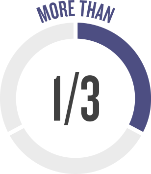

ここでは、 多様性、平等性、および包括性に関する統計情報を紹介します。 これらの統計情報は、「見えない」偏見 がどのようにして見えにくくなるかという点で、あなたにとって興味深いものになるかもしれない。
DEI統計
可能性が高いCEOの名前は...
こんにちは! 私は
ジョン
または
こんにちは! 私は
デイビッド
女性のCEOを持つことよりも
アンケート調査
400人の40歳以上のフルタイム従業員
年齢差別の経験者を知っている、または年齢差別 の経験者

40歳以上の方は年齢のせいで仕事 を得ることができないと感じた
年齢のせいで仕事は危険にさらされていると感じた
白人らしい名前で容認されるレジュメ
50
%
コールバックが多い
アフリカ系アメリカ人の人々に関連付けられている名前よりも
たった
米国の企業では
米国労働省の目標を満たしている時
の障害者が労働力に表示される時です
識別情報が履歴書 またはオーディションから削除される場合 、女性が採用される可能性が高くなります
女性が採用される可能性が高くなります
... 識別情報が履歴書またはオーディションから削除される場合
企業では
シニアリーダーの10％が女性
男性の半数は、女性 が「よく準備する必要がある」と考えている
アジア系アメリカ人の「ホワイトカラーのプロ」は、一般社員 から経営者に昇進する可能性が最も低い グループです
経済協力と開発の機構の報告による
LGBTとして識別する人々の割合は、非LGBTの人々よりも雇用される可能性が低い です。
LGBTとして識別する人々の割合は、非LGBTの人々に比べて低い収益を持っています.
LGBTとして識別する人々の割合は、高い管理職を保持する可能性が低いです。
これらは、私たちの無意識の偏見 がとてもリアルな方法で実際の人々の参加意識に影響を与える一部のケースになります
- https://www.nytimes.com/2015/03/03/upshot/fewer-women-run-big-companies-than-men-named-john.html?_r=0
- https://www.hiscox.com/documents/2019-Hiscox-Ageism-Workplace-Study.pdf
- https://www.nber.org/papers/w9873
- https://diversity.social/disability/#2-disability-statistics-around-the-world
- https://www.nytimes.com/2016/02/28/magazine/is-blind-hiring-the-best-hiring.html
- https://womenintheworkplace.com
- https://hbr.org/2018/05/asian-americans-are-the-least-likely-group-in-the-u-s-to-be-promoted-to-management
- https://www.oecd.org/els/soc/lgbti.htm